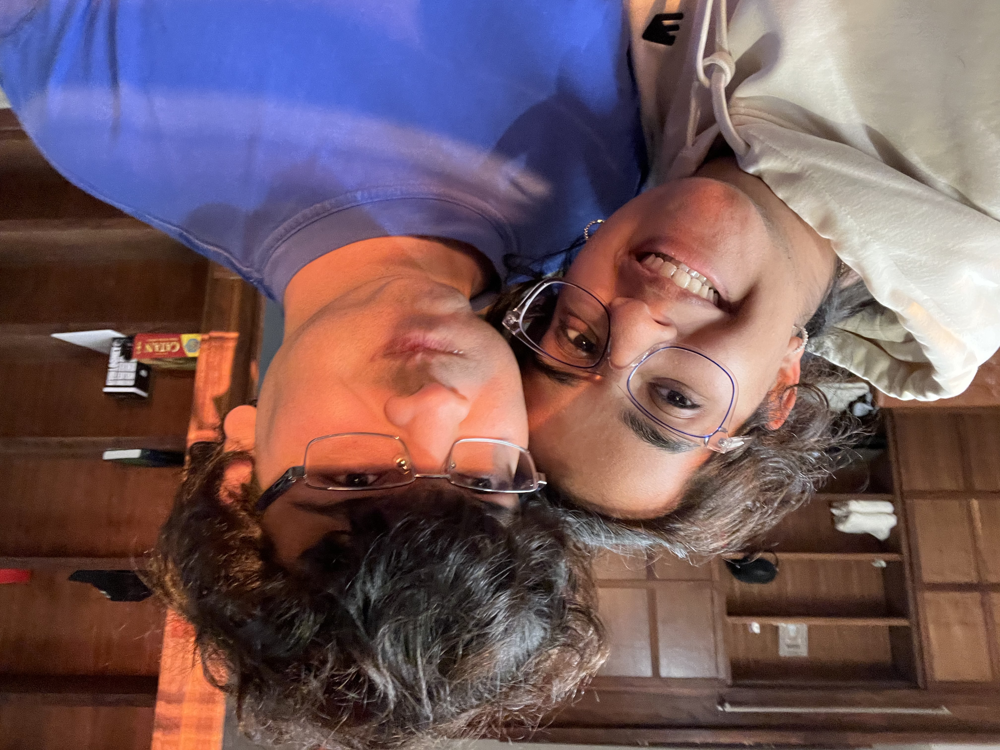

my story
june 25, 2025
i'm the co-founder of shapes. we have a simple mission: interact with ai w/ your friends. shapes have already exchanged billions of messages with 30 million people, and we're lucky to be backed by the best investors and founders in the world, including lightspeed and ai grant. we're still at day 0.
i got my start when i was 12 making websites for everyone i possibly could. in no particular order, i spent most of my childhood playing chicken invaders 2, nurturing my moshi monsters, becoming an influencer on wattpad, running ux design and research for f500s, closing 6 figure deals leading growth for a startup, running tiktok campaigns for ihop, p&g, vf, and meta (one w/ shawn mendes!), and running a profitable consumer brand. by the time i graduated high school, i was working full-time and startups were my #1 obsession.
during the pandemic, i got to spend time at a bunch of startups ranging from hyperlogistics and ai deepfakes to plant-based chicken nuggets, 3d-printed jeans, and a kyc provider that onboarded el salvador to the chivo wallet.
i'm also a nyu dropout, though i met my co-founder when i attended emory. i moved to san francisco in january 2023.

i'm a lifelong eagles and sixers fan. i semi-regularly play tennis and try to go to the gurdwara 3x a month.
i learn something new every day about making software, building a team, and growing a business. i'm going to be working on shapes for the next 55+ years and am deeply inspired by the work done by roblox and nintendo.